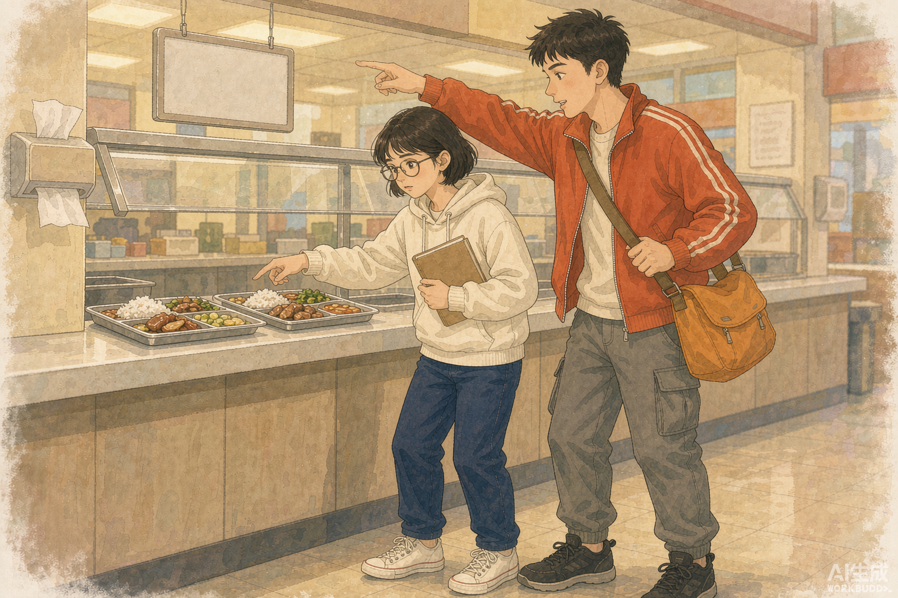

课程概览
| 项目 | 内容 |
|---|---|
| 热度排序 | 第 1 位 · AI 短剧 / 微短剧一站式制作 |
| 建议课时 | 90 分钟，单人独立完成 |
| 主要工具 | WorkBuddy（其余工具均为可选对照） |
| 逐步操作 | 10 步，每步含可复制提示词、输入输出、能力编号与替代路径 |
| 随课素材 | 12 份，全部已备齐 |
| 验收标准 | 100 分，6 个评价项目 |
本页目录
一、方向说明
AI 短剧（含 AI 微短剧、AI 漫剧、AI 仿真人剧）是当前产出最密集的生成式 AI 应用方向。公开数据表明，2026 年第一季度全行业上线微短剧约 12.8 万部，其中 AI 微短剧约 12.2 万部（占比超过 95%）；上半年新上线 AI 剧漫剧超 22.19 万部，全年市场规模预计约 400 亿元、同比增长 138%，相关从业者与个人创作者超 50 万。CNNIC《生成式人工智能应用发展报告（2026）》中「处理图片/视频」的用户占比为 47.8%。
技术侧已经形成「剧本生成 → 分镜控制 → 角色一致性 → 画面生成 → 字幕配音 → 剪辑合成」的工业化闭环。这一闭环恰好可以压缩进一节 90 分钟实践课：学生单人用 WorkBuddy 完成从脚本到成品的全部环节，不需要摄制组、不需要演员、不需要剪辑软件。
本课把「成片 MP4」设为可选加分项，把「分镜图 + 字幕 + 可播放的分镜预览页」设为主交付物。这样既覆盖完整创作链路，又保证在视频生成额度、网络或设备受限时，所有学生仍能按时交付一份可评分的完整作品，不会卡在某一个外部能力上。
本课是全套 5 节实践课的示范课，步骤写到「可直接照做」的粒度：每一步都给出目标、具体动作、可整段复制的提示词、输入素材、输出文件、WorkBuddy 能力编号、能力不可用时的替代路径，以及当场自检点。
本课热度依据
| 维度 | 公开依据 |
|---|---|
| 用户侧渗透率 | 高：处理图片/视频 47.8%（S1/S1b） |
| 产业侧规模与增速 | 很高：2026 Q1 AI 微短剧约 12.2 万部 / 全行业 12.8 万部，占比 >95%（S2）；上半年新上线 22.19 万部、全年市场预计 400 亿元、同比 +138%、从业者超 50 万（S4） |
| 技术与工具生态热度 | 很高：AI 短剧 / AI 漫剧为 2026-09 搜索热词；剧本—分镜—角色一致性—渲染—剪辑形成工业化闭环（S10/S11/S5） |
| 可交付作品密度 | 很高：剧本、分镜表、角色卡、分镜图、字幕、预览页、制作说明，成品包完整可评分 |
| 来源编号 | S1, S1b, S2, S3, S4, S5, S10, S11 |
二、学习目标
- 能把一个校园真实议题改写为 60 秒微短剧的三幕结构剧本，并写出可拍摄的分镜表。
- 能使用 WorkBuddy 的图像生成能力，按统一人物设定与画风产出多张一致性分镜图。
- 能把剧本、分镜图、字幕、片头片尾整合为一个可在浏览器直接播放的分镜预览页。
- 能按 100 分量规自检作品，并说明 AI 生成内容的授权、肖像与标识合规要求。
三、所需素材清单（已备齐，逐份可下载）
| 文件（点击下载） | 内容 | 在课程中的用途 |
|---|---|---|
| 01_题材设定包.md | 校园财商微短剧《五十元的一周》的题材、主题、冲突、时长与集数设定 | 第 1 步选题、第 2 步写剧本的输入 |
| 02_人物卡.csv | 3 位人物的外貌、服装、性格、口头禅与视觉负面词 | 第 3 步人物设定、第 5 步图像提示词的一致性锚点 |
| 03_场景清单.csv | 6 个校园场景的时间、光线、色调与道具 | 第 4 步分镜表、第 5 步画面描述 |
| 04_原始事件素材.md | 10 条课堂虚构的校园消费冲突事件，可直接改编为剧情 | 第 2 步剧本冲突来源 |
| 05_分镜表模板.csv | 含 1 行示范的分镜表模板（镜号/时长/景别/画面/台词/字幕/音效/提示词） | 第 4 步填表 |
| 06_提示词库.md | 8 类可整段复制的提示词：选题、剧本、人物、分镜、图像、字幕、预览页、自检 | 全课各步骤 |
| 07_字幕模板.srt | SRT 字幕格式样板与时间轴书写规则 | 第 7 步字幕 |
| 08_片头片尾文案.md | 片头 3 秒、片尾 5 秒的文案与合规标识位 | 第 7 步片头片尾 |
| 09_验收量表.csv | 100 分验收量规的机器可读版本 | 第 9 步自检 |
| 10_合规与授权清单.md | 肖像、版权、AI 标识与素材来源的逐项检查清单 | 第 9 步合规自检 |
| 示例_分镜图_01.png | 本轮用 WorkBuddy 图像生成能力实际产出的一张课堂示例分镜图 | 第 5 步参照样例（仅作风格参考，提交时需替换为学生自己生成的图） |
| README.md | 素材包总说明与文件索引 | 开课前核对 |

四、工具与环境说明
| 工具 / 能力 | 用途 | 是否必需 | 说明 |
|---|---|---|---|
| WorkBuddy 对话与长文写作 | 选题、剧本、人物设定、分镜、字幕、文案、制作说明 | 必需 | 全程在同一会话内完成，便于保持人物与剧情上下文一致。 |
| WorkBuddy 本地文件读写 | 生成 .md / .csv / .srt / .html 等成果文件 | 必需 | 所有中间产物都落盘，便于逐步验收与回溯。 |
| WorkBuddy 图像生成 | 按分镜提示词生成分镜图 | 必需（有替代路径） | 按平台计费约 5–10 积分/张；未开通时按步骤 5 的替代路径交付，不阻塞验收。 |
| WorkBuddy 网页构建与预览 | 生成单文件分镜预览页并在预览面板打开 | 必需 | 纯 HTML/CSS/JS，无需安装任何依赖。 |
| WorkBuddy 命令执行 | 文件清点、ZIP 打包、链接与图片存在性自检 | 必需 | 也可手动完成，但建议用命令一次性核验。 |
| WorkBuddy 视频生成 | 可选：把分镜图生成短片段并合成 MP4 | 可选（加分项） | 消耗额度较高且受时长限制；不做不影响通过验收。 |
| Trae / DeepSeek 等 | 可选：对照同一提示词的输出差异 | 可选 | 不计入验收，避免因缺少账号影响成绩。 |
- 本套课程以 WorkBuddy 为唯一必需工具；所有步骤都给出 WorkBuddy 内的具体操作与可复制提示词。
- Trae、DeepSeek 等工具仅作为「同口径对照」的可选补充，不参与验收，避免学生因缺少账号无法完成。
- 凡涉及需要额外权限、连接器、额度或外部账号的步骤，一律标注为「可选」，并给出不依赖该能力的等价替代路径。
- 素材全部为课堂虚构数据，不涉及真实个人信息；不得把未实际运行的功能写成已上线结果。
五、一站式流程
| 阶段 | 从输入到成品 |
|---|---|
| ① 输入素材 | 题材设定包 + 人物卡 + 场景清单 + 原始事件素材 + 分镜表模板 + 提示词库（全部已备齐，随素材包下发） |
| ② 文本制作 | 一句话梗概 → 三幕剧本 → 人物视觉设定卡 → 8 镜分镜表 → 字幕 SRT → 片头片尾文案 |
| ③ 画面制作 | 按分镜表的画面提示词逐镜生成 PNG 分镜图，用人物卡锁定一致性，统一 16:9 画幅与画风 |
| ④ 集成成品 | 生成单文件分镜预览页：按时间轴轮播分镜图、叠加字幕与旁白、显示片头片尾，浏览器直接播放 |
| ⑤ 验收提交 | 按 100 分量规自检 + 合规清单核对 + 打包为 ZIP，附制作说明 |
六、逐步操作指导（90 分钟）
环境准备与素材核对
目标：建立目录、清点 12 份素材，确认 WorkBuddy 可读写本地文件。
- 在 WorkBuddy 会话中说明：「本课在工作目录新建 第1课_短剧制作包/，全程使用该目录」。
- 让 WorkBuddy 列出随课素材包文件，并逐一确认 12 份素材齐全。
- 打开 01_题材设定包.md 与 04_原始事件素材.md，通读一遍，圈定 1 个准备改编的事件。
可整段复制的提示词 / 能力输入：
请在本课工作目录创建「第1课_短剧制作包」文件夹，并列出「素材/第1课_AI短剧制作」下的全部文件名。逐一核对是否包含以下 12 项：01_题材设定包.md、02_人物卡.csv、03_场景清单.csv、04_原始事件素材.md、05_分镜表模板.csv、06_提示词库.md、07_字幕模板.srt、08_片头片尾文案.md、09_验收量表.csv、10_合规与授权清单.md、示例_分镜图_01.png、README.md。输出一张核对表（文件名 / 是否存在 / 用途一句话），缺失项明确标出，不要替我编造文件。
| 项 | 内容 |
|---|---|
| 输入 | 素材包（12 份文件） |
| 输出 | 素材核对表（会话内）+ 第1课_短剧制作包/ 目录 |
| WorkBuddy 能力 | WB-FILE 本地文件读写 |
| 替代路径 | 若工作目录不可写，改为在会话内以文本形式逐步产出，最后一次性复制落盘；不影响后续步骤。 |
| 当场自检点 | 核对表 12 行全部为「存在」，目录已建立。 |
选题与一句话梗概
目标：从 10 条原始事件中选 1 条，写出含人物、目标、阻碍、反转的一句话梗概。
- 把 01_题材设定包.md 与 04_原始事件素材.md 的内容提供给 WorkBuddy（可直接让它读取文件）。
- 使用提示词生成 3 个候选题与一句话梗概，自己选定 1 个，写入 01_一句话梗概与选题说明.md。
- 明确交付规格：60 秒、8 个镜头、3 位人物、主题为「预算约束下的选择」。
可整段复制的提示词 / 能力输入：
请读取「素材/第1课_AI短剧制作/01_题材设定包.md」与「04_原始事件素材.md」。这是课堂虚构素材。请从中选出 3 条最适合改编为 60 秒校园微短剧的事件，各写一条「一句话梗概」，格式固定为：当【人物】想要【目标】时，却遇到【阻碍】，最后因【反转】而【结果】。每条 40 字以内。然后给出你的推荐及理由（不超过 80 字），理由需说明冲突是否可视、是否能在 8 个镜头内讲完。不要新增素材里没有的人物或设定。
| 项 | 内容 |
|---|---|
| 输入 | 01_题材设定包.md、04_原始事件素材.md |
| 输出 | 01_一句话梗概与选题说明.md |
| WorkBuddy 能力 | WB-CHAT 对话与长文写作 |
| 替代路径 | 若对话长度受限，可只提供事件 1—5 条，分两次生成候选，再合并选择。 |
| 当场自检点 | 梗概包含人物/目标/阻碍/反转四要素，且所选事件确实来自原始素材。 |
写三幕八场剧本
目标：产出可直接拆镜头的完整剧本，含场景、动作、台词与情绪。
- 把选定梗概 + 人物卡交给 WorkBuddy，按「建置 / 对抗 / 解决」三幕生成 8 场。
- 要求每场标注：场景编号（对应 03_场景清单.csv）、时长秒数、人物动作、台词、情绪、可拍摄性说明。
- 检查总时长是否控制在 60 ± 5 秒；超时则让 WorkBuddy 压缩台词，不要删场次。
- 写入 02_剧本_五十元的一周.md。
可整段复制的提示词 / 能力输入：
基于我选定的一句话梗概（见 01_一句话梗概与选题说明.md）与「02_人物卡.csv」，写一部 60 秒校园微短剧剧本《五十元的一周》。要求：三幕结构（建置 2 场 / 对抗 4 场 / 解决 2 场），共 8 场，每场对应一个镜头；每场必须写明：镜号、场景编号（只能用 03_场景清单.csv 中已有的 6 个场景）、时长（秒，8 场合计 60±5）、画面动作、台词（每人不超过 12 字）、字幕文字、情绪、音效。台词口语化，不出现说教；结局用一个可视动作表达主题，不要用旁白总结。人物只能使用人物卡中的 3 人，不得新增角色。全部为课堂虚构内容，不得使用真实姓名、校名或品牌名。输出为 Markdown，并附一张「镜号—时长—场景」汇总表。
| 项 | 内容 |
|---|---|
| 输入 | 梗概、人物卡、场景清单 |
| 输出 | 02_剧本_五十元的一周.md |
| WorkBuddy 能力 | WB-CHAT 对话与长文写作 |
| 替代路径 | 若一次性生成 8 场过长，先生成三幕大纲，再分两批各生成 4 场，最后让 WorkBuddy 合并为一份文件并校对总时长。 |
| 当场自检点 | 8 场齐全、场景编号均来自清单、时长合计 60±5 秒、结局是可视动作。 |
固化人物视觉设定卡
目标：把人物卡改写为可复用的图像生成锚点，保证 8 张分镜图里同一个人长得一样。
- 让 WorkBuddy 为每位人物生成一段固定的「视觉锚点描述」（约 60 字，含发型、服装、配色、年龄感）。
- 再生成一段固定的「画风前缀」与「负面词」，供 8 张图共用。
- 写入 03_人物设定卡.csv（在素材 02_人物卡.csv 基础上增加 visual_prompt / style_prefix / negative 三列）。
可整段复制的提示词 / 能力输入：
读取「02_人物卡.csv」。为每位人物生成一段固定的中文「视觉锚点描述」（60 字左右）：只写外观可见特征，不写性格与内心；包含发型、上衣、下装、鞋、随身道具与主色，且三人主色互不重复。另外生成：① 一段全片统一使用的画风前缀（写清画幅 16:9、光线、镜头感、色彩、画种，40 字左右）；② 一组负面词（至少 8 项，含多余肢体、文字水印、面部变形、品牌标识、真实人脸等）。输出一张表：人物 / 视觉锚点 / 主色，以及画风前缀与负面词两个独立段落。这些文本后续会被逐字复制到每一张分镜图的提示词里，请保证可独立使用、不含「如上」「同上」等指代词。
| 项 | 内容 |
|---|---|
| 输入 | 02_人物卡.csv |
| 输出 | 03_人物设定卡.csv |
| WorkBuddy 能力 | WB-FILE 本地文件读写 |
| 替代路径 | 无需外部能力；若图像生成不可用，本步产物仍作为分镜表的「画面说明」使用，保证文字层完整。 |
| 当场自检点 | 三段视觉锚点可独立复制到提示词中，无指代词；负面词 ≥8 项。 |
填 8 镜分镜表
目标：把剧本转成机器可读的分镜表，并为每一镜写出完整图像提示词。
- 以 05_分镜表模板.csv 的列为准，让 WorkBuddy 把 8 场剧本逐镜填入。
- image_prompt 列必须 = 画风前缀 + 该镜人物视觉锚点 + 该镜动作/景别/场景 + 负面词，且可整段复制。
- 写入 04_分镜表.csv，并检查 8 行 × 8 列无缺项。
可整段复制的提示词 / 能力输入：
读取「02_剧本_五十元的一周.md」、「03_人物设定卡.csv」与素材「05_分镜表模板.csv」。把 8 场剧本填入分镜表，列保持模板不变：镜号,时长秒,景别,画面描述,人物,台词,字幕,音效,image_prompt。其中 image_prompt 必须是一段可整段复制、独立成立的中文图像提示词，结构固定为：【画风前缀】+【本镜出场人物的视觉锚点原文】+【景别与镜头角度】+【人物动作与表情】+【场景环境（取自 03_场景清单.csv）】+【光线色调】+【负面词】。不得出现「如上」「同上」「参见前镜」等指代词；不得出现真实人名、品牌与校名。输出完整 CSV（含表头，8 行），并在表后列出 8 条 image_prompt 的字数，确认每条不少于 90 字。
| 项 | 内容 |
|---|---|
| 输入 | 剧本、人物设定卡、分镜表模板、场景清单 |
| 输出 | 04_分镜表.csv |
| WorkBuddy 能力 | WB-FILE 本地文件读写 |
| 替代路径 | 若 CSV 生成出现列错位，改为先写 Markdown 表格，再用命令执行能力让 WorkBuddy 转成标准 CSV 并校验列数。 |
| 当场自检点 | CSV 为 9 行（表头 + 8 镜）；每条 image_prompt ≥90 字且无指代词。 |
生成分镜图（必做 3 张，建议 8 张）
目标：用 WorkBuddy 图像生成能力产出统一画风的分镜图，并验证人物一致性。
- 在 WorkBuddy 中使用图像生成能力，尺寸设为 1536x1024（16:9 近似），逐条粘贴 04_分镜表.csv 里的 image_prompt。
- 先做第 1、4、8 镜（开端 / 冲突 / 结局）三张必做图；时间充裕再补齐 8 张。
- 把图片统一放入 05_分镜图/，命名 镜号两位数字.png，如 01.png、04.png、08.png。
- 对照 03_人物设定卡.csv 检查：同一个人物的发型、服装、主色在 3 张图中是否一致；不一致时补强锚点并重生成该张。
- 对照素材包里的 示例_分镜图_01.png 判断画风是否统一；示例图只作参照，不得当作自己的成果提交。
可整段复制的提示词 / 能力输入：
（本步不是文本提示词，而是图像生成输入。）对 04_分镜表.csv 中每一条的 image_prompt 列，逐条调用图像生成：size=1536x1024、quality=medium、style 保持全片一致。生成后保存到「第1课_短剧制作包/05_分镜图/」，文件名为该镜镜号的两位数字，例如 01.png。若发现人物服装或主色与 03_人物设定卡.csv 不一致，请把该人物的视觉锚点描述再完整粘贴一次到提示词最前面，重新生成这一张。
| 项 | 内容 |
|---|---|
| 输入 | 04_分镜表.csv 的 image_prompt 列、03_人物设定卡.csv、示例_分镜图_01.png |
| 输出 | 05_分镜图/01.png（必做）、04.png（必做）、08.png（必做），建议补齐 02—07.png |
| WorkBuddy 能力 | WB-IMAGE 图像生成（文生图 / 图生图） |
| 替代路径 | 未开通图像生成或额度不足时，执行等价替代：让 WorkBuddy 依据每条 image_prompt 生成「分镜示意卡」——8 张纯 HTML/CSS 绘制的 16:9 卡片（用色块、形状、人物名标签、景别框与画面文字描述表达构图），放进 05_分镜图/ 下并在 09_制作说明.md 中注明「本作品采用文字分镜示意卡替代生成图像，原因：图像生成能力未启用」。该替代同样满足验收中「画面层完整、可播放、可解释」的要求，不虚构已生成图片。 |
| 当场自检点 | 05_分镜图/ 下至少 3 个图片文件或 8 个示意卡文件；三张必做图人物主色一致；文件名与镜号对应。 |
字幕、旁白与片头片尾
目标：生成与 8 镜时间轴严格对齐的 SRT 字幕，补齐片头片尾文案。
- 让 WorkBuddy 按 04_分镜表.csv 的「时长秒」累加时间轴，把每镜字幕写成 SRT。
- 检查：字幕条数 = 8（或按台词拆分，但时间轴不得重叠、不得超出总时长）。
- 写入 06_字幕.srt；把片头 3 秒、片尾 5 秒文案与 AI 生成标识写入 07_片头片尾文案.md。
可整段复制的提示词 / 能力输入：
读取「04_分镜表.csv」。按镜号顺序把「时长秒」累加成时间轴（第 1 镜从 00:00:00,000 开始），把每镜的「字幕」列写成一条 SRT 字幕，格式严格为：序号 / 起止时间 00:00:SS,mmm --> 00:00:SS,mmm / 字幕文字 / 空行。要求：时间轴连续不重叠、末条结束时间等于总时长、每条字幕不超过 15 字。另写片头文案（3 秒，含剧名与「本片画面由 AI 生成 · 课堂练习作品」标识）与片尾文案（5 秒，含主题一句、素材来源声明、制作日期占位）。分别输出为可直接保存的 06_字幕.srt 文本与 07_片头片尾文案.md 文本。
| 项 | 内容 |
|---|---|
| 输入 | 04_分镜表.csv、07_字幕模板.srt、08_片头片尾文案.md |
| 输出 | 06_字幕.srt、07_片头片尾文案.md |
| WorkBuddy 能力 | WB-FILE 本地文件读写 |
| 替代路径 | SRT 时间轴也可由命令执行能力用 Python 从 CSV 精确生成，避免手工累加出错。 |
| 当场自检点 | SRT 8 条、时间轴连续、末条结束时间 = 8 镜时长合计。 |
集成：生成可播放的分镜预览页
目标：把图、字幕、片头片尾整合成一个双击即可在浏览器播放的单文件页面。
- 让 WorkBuddy 生成 08_分镜预览.html：单文件、零外部依赖，图片用相对路径 05_分镜图/xx.png。
- 页面要求：片头 3 秒 → 按 04_分镜表.csv 时长逐镜轮播 → 片尾 5 秒；底部叠加当前镜字幕；支持播放/暂停、上一镜/下一镜、重播；显示镜号与进度条。
- 用预览面板打开页面，实际点一次播放，确认 3 张必做图都能显示、字幕切换正常。
- 缺图时显示「本镜图片待补」占位卡，不得出现破图图标。
可整段复制的提示词 / 能力输入：
请生成一个单文件 HTML 页面「08_分镜预览.html」，零外部依赖，可直接双击打开。数据直接内嵌在页面里（从 04_分镜表.csv 与 06_字幕.srt 读取后写死为 JS 数组），图片使用相对路径 05_分镜图/01.png 这样的格式。功能：① 片头 3 秒显示《五十元的一周》与「本片画面由 AI 生成 · 课堂练习作品」；② 按每镜时长自动轮播分镜图，底部叠加该镜字幕，右上角显示镜号与总进度条；③ 片尾 5 秒显示主题与素材来源声明；④ 提供 播放/暂停、上一镜、下一镜、重播 四个按钮，键盘 ← → 空格也可操作；⑤ 图片不存在时显示带镜号与画面文字描述的占位卡，禁止出现浏览器破图；⑥ 页面底部列出制作信息（课程名、课次、制作日期占位、WorkBuddy 工具说明）。样式：16:9 主画面居中、深色背景、无衬线字体、移动端自适应。只输出完整 HTML 代码，不要省略任何片段。
| 项 | 内容 |
|---|---|
| 输入 | 04_分镜表.csv、06_字幕.srt、05_分镜图/、07_片头片尾文案.md |
| 输出 | 08_分镜预览.html |
| WorkBuddy 能力 | WB-HTML 网页与应用构建、预览 |
| 替代路径 | 若预览面板不可用，用命令执行能力启动本地静态服务并用浏览器打开；或直接双击 HTML 文件。页面本身不依赖任何服务。 |
| 当场自检点 | 浏览器实际播放一次：片头 → 3 张必做图 → 片尾可见，字幕随时间切换，四个按钮可用。 |
自检与合规核对
目标：按 100 分量规逐项打分，核对合规清单，补齐制作说明。
- 让 WorkBuddy 读取 09_验收量表.csv 与 10_合规与授权清单.md，对成果目录逐项核验并输出得分表。
- 生成 09_制作说明.md：工具与版本口径、每一步实际使用的能力、生成图数量、未启用能力及替代方案、素材来源声明。
- 凡未实际运行的能力（如视频生成、外部平台发布），必须在说明中写明「未启用」，不得写成已完成。
可整段复制的提示词 / 能力输入：
请检查「第1课_短剧制作包」目录，对照素材「09_验收量表.csv」逐项核验并给出得分表（项目 / 满分 / 自评得分 / 证据文件路径 / 扣分原因）。再对照「10_合规与授权清单.md」输出逐条合规核对结果。最后生成 09_制作说明.md，包含：使用的工具与能力编号清单、每一步实际产出、分镜图数量与生成方式、任何未启用能力及其替代路径（必须如实写明「未启用」，不得描述为已完成）、素材来源（全部为课堂虚构数据）、AI 生成内容标识说明、遇到的问题与解决方式、复现步骤摘要。不得编造不存在的文件或运行结果。
| 项 | 内容 |
|---|---|
| 输入 | 成果目录、09_验收量表.csv、10_合规与授权清单.md |
| 输出 | 09_制作说明.md + 会话内得分表 |
| WorkBuddy 能力 | WB-CMD 命令执行与数据处理 |
| 替代路径 | 可手动逐项核对；命令执行仅用于文件清点与 ZIP 校验，不构成必需依赖。 |
| 当场自检点 | 得分表 6 项齐全、合计 100 分口径正确；未启用能力均显式标注。 |
打包提交
目标：形成一份可提交、可复现、可评分的完整 ZIP。
- 让 WorkBuddy 检查成果目录文件树是否齐全（9 个必需条目 + 可选 MP4）。
- 打包为「第1课_短剧制作包_学号姓名.zip」，ZIP 内保持相对路径，不打包素材原始包。
- 核对 ZIP 可正常解压、图片与 HTML 路径在解压后仍然有效。
可整段复制的提示词 / 能力输入：
请把「第1课_短剧制作包」目录打包为 ZIP（文件名含学号与姓名占位），打包前先输出一张文件树核对表，确认包含：01_一句话梗概与选题说明.md、02_剧本_五十元的一周.md、03_人物设定卡.csv、04_分镜表.csv、05_分镜图/（至少 3 个文件）、06_字幕.srt、07_片头片尾文案.md、08_分镜预览.html、09_制作说明.md。打包后重新打开 ZIP 校验：文件数、每个文件大小、08_分镜预览.html 中引用的图片相对路径在 ZIP 内均存在。输出校验结果，若有缺失列出具体文件名，不要自动补造内容。
| 项 | 内容 |
|---|---|
| 输入 | 第1课_短剧制作包/ 全部成果 |
| 输出 | 第1课_短剧制作包_学号姓名.zip + 打包校验表 |
| WorkBuddy 能力 | WB-CMD 命令执行与数据处理 |
| 替代路径 | 可手动全选目录压缩；ZIP 内相对路径必须保持，否则预览页会找不到图片。 |
| 当场自检点 | ZIP 可解压、9 个必需条目齐全、预览页图片相对路径全部命中。 |
七、最终成品形式
成果目录建议命名为 第1课_AI 短剧一站式制作制作包/，提交时打包为 ZIP。
| 成果路径 | 验收规格 |
|---|---|
| 01_一句话梗概与选题说明.md | 梗概 1 条（40 字内）+ 选择理由 + 60 秒/8 镜/3 人的规格声明 |
| 02_剧本_五十元的一周.md | 三幕 8 场，每场含镜号/场景/时长/动作/台词/字幕/情绪/音效，总时长 60±5 秒，附汇总表 |
| 03_人物设定卡.csv | 3 行；在原始人物卡基础上增加 visual_prompt、style_prefix、negative 三列 |
| 04_分镜表.csv | 表头 1 行 + 8 行；含 image_prompt 列，每条 ≥90 字、无指代词 |
| 05_分镜图/ | 至少 3 张 16:9 PNG（01/04/08），建议 8 张；人物服装与主色跨图一致 |
| 06_字幕.srt | 8 条，时间轴连续不重叠，末条结束时间 = 总时长 |
| 07_片头片尾文案.md | 片头 3 秒含 AI 生成标识；片尾 5 秒含主题与素材来源声明 |
| 08_分镜预览.html | 单文件零依赖；片头→轮播→片尾、字幕叠加、4 个控制按钮、缺图占位卡 |
| 09_制作说明.md | 能力清单、逐步产出、未启用能力与替代、素材来源、合规标识、复现摘要 |
| （可选）10_成片.mp4 | 仅在视频生成能力可用时制作；加分项，不作为通过条件 |
八、验收标准（100 分）
| 评价项目 | 分值 | 评分要点 |
|---|---|---|
| 剧本完整性与主题表达 | 20 | 三幕 8 场齐全（8 分）；场景编号均来自场景清单（4 分）；总时长 60±5 秒（4 分）；结局为可视动作、无说教旁白（4 分）。 |
| 人物与分镜一致性 | 20 | 人物设定卡 3 人锚点可独立使用（6 分）；8 镜分镜表无缺项（6 分）；image_prompt 均 ≥90 字且无指代词（4 分）；跨镜人物服装/主色一致（4 分）。 |
| 分镜图质量与数量 | 20 | 3 张必做图齐全（9 分）；16:9 统一画幅与画风（5 分）；画面能表达对应镜号动作（4 分）；命名与镜号对应（2 分）。采用文字示意卡替代路径时，按同等标准评价构图表达能力。 |
| 字幕与文案 | 15 | SRT 8 条且时间轴连续（6 分）；字幕与台词一致、≤15 字（4 分）；片头含 AI 生成标识（3 分）；片尾含素材来源声明（2 分）。 |
| 分镜预览页可运行 | 15 | 浏览器实际可播放（6 分）；字幕随镜切换（3 分）；4 个控制按钮可用（3 分）；缺图有占位、无破图（3 分）。 |
| 制作说明与合规 | 10 | 逐步产出与能力编号齐全（4 分）；未启用能力如实标注（3 分）；合规清单逐条核对（3 分）。 |
| 合计 | 100 | 未启用能力按对应替代路径等量评价 |
九、常见卡点与处理
| 问题 | 处理方式 |
|---|---|
| 8 张图里同一个人长得不一样 | 把该人物的视觉锚点描述整段复制到提示词最前面，并固定画风前缀与负面词；必要时用图生图以第 1 镜人物为参照。 |
| 图像生成额度不足 | 执行步骤 5 的「文字分镜示意卡」替代路径，在制作说明中如实标注未启用，不虚构图片。 |
| SRT 时间轴算错 | 让 WorkBuddy 用 Python 从 04_分镜表.csv 的时长列累加生成，而不是手工填写。 |
| 预览页图片显示为破图 | 检查 ZIP / 目录内相对路径是否为 05_分镜图/01.png；页面已内置缺图占位卡，仍应保证必做图命名正确。 |
| 剧本超时（超过 65 秒） | 压缩台词字数而不是删场次，保证 8 镜结构完整；每句台词 ≤12 字。 |
| 把示例图当作自己的成果 | 示例_分镜图_01.png 仅供风格参照；提交包内不得包含该文件，验收时会核对图片生成方式说明。 |
十、合规要求
- 人物、场景、事件、台词全部来自课堂虚构素材，不使用真实姓名、学号、校名、品牌与商标。
- 不使用真实人物肖像，不生成撞脸明星或网红的形象；负面词中已包含真实人脸与品牌标识。
- 片头必须标注「本片画面由 AI 生成 · 课堂练习作品」，片尾声明素材来源。
- 不把课堂作品对外发布到公开平台；如需公开发布，须另行完成授权与平台备案要求的核验。
- 制作说明中如实记录哪些能力实际启用、哪些未启用及替代方案，不得把演示写成已上线运行。
十一、提交清单
- 第1课_短剧制作包_学号姓名.zip（含 9 个必需条目，可选 MP4）
- 会话内输出的自评得分表（6 项、100 分制）
- 一句话说明：本作品实际启用了哪些 WorkBuddy 能力、是否有未启用能力及其替代路径
十二、WorkBuddy 能力映射（逐步骤）
| 步骤 | 能力编号 | 能力名称 | 输入 | 输出 | 替代路径 |
|---|---|---|---|---|---|
| 环境准备与素材核对 | WB-FILE | 本地文件读写 | 已给出 | 已给出 | 已给出 |
| 选题与一句话梗概 | WB-CHAT | 对话与长文写作 | 已给出 | 已给出 | 已给出 |
| 写三幕八场剧本 | WB-CHAT | 对话与长文写作 | 已给出 | 已给出 | 已给出 |
| 固化人物视觉设定卡 | WB-FILE | 本地文件读写 | 已给出 | 已给出 | 已给出 |
| 填 8 镜分镜表 | WB-FILE | 本地文件读写 | 已给出 | 已给出 | 已给出 |
| 生成分镜图（必做 3 张，建议 8 张） | WB-IMAGE | 图像生成（文生图 / 图生图） | 已给出 | 已给出 | 已给出 |
| 字幕、旁白与片头片尾 | WB-FILE | 本地文件读写 | 已给出 | 已给出 | 已给出 |
| 集成：生成可播放的分镜预览页 | WB-HTML | 网页与应用构建、预览 | 已给出 | 已给出 | 已给出 |
| 自检与合规核对 | WB-CMD | 命令执行与数据处理 | 已给出 | 已给出 | 已给出 |
| 打包提交 | WB-CMD | 命令执行与数据处理 | 已给出 | 已给出 | 已给出 |
附 · 本课成果样例（课程组示范）
1. 10 秒 AI 短剧成片《五十元的一周》
以本课第 1 镜分镜图为首帧，按第 1—2 镜画面动作生成；含片头 AI 生成标识、按 06_字幕.srt 时间轴烧入的字幕与钢琴风格背景音乐。
| 项目 | 规格 |
|---|---|
| 时长 / 画幅 | 10.00 秒 · 1280 × 720 · 16:9 |
| 视频 / 音频 | H.264 · AAC 44.1 kHz 立体声 |
| 片段覆盖 | 第 1 镜（宿舍书桌）→ 第 2 镜（食堂窗口） |
| 字幕 | 0—5 秒「一周 只剩五十元」；5—10 秒「两份套餐 只能选一份」 |
| 背景音乐 | C—G—Am—F 和弦进行，ADSR 包络 + 谐波叠加模拟钢琴音色 |
2. 8 张分镜图（01 / 04 / 08 为必做镜）



3. 页面规定的 9 个必需条目与附录（逐份可查看）
| 成果 | 文件 | 内容摘要 |
|---|---|---|
| 01 梗概与选题说明 | 01_一句话梗概与选题说明.md | 3 条候选梗概、选定理由与 60 秒 / 8 镜规格 |
| 02 三幕八场剧本 | 02_剧本_五十元的一周.md | 8 场 60 秒、7 句台词、E10 可视动作结局 |
| 03 人物设定卡 | 03_人物设定卡.csv | 3 行 × 11 列，含 visual_prompt 与负面词 |
| 04 分镜表 | 04_分镜表.csv | 表头 + 8 行 × 9 列，8 条可复现 image_prompt |
| 05 分镜图目录 | 05_分镜图/01.png—08.png | 8 张 1536×1024 图 |
| 06 字幕 | 06_字幕.srt | 8 条，末条结束 00:01:00,000 |
| 07 片头片尾文案 | 07_片头片尾文案.md | 含 AI 生成标识与素材来源声明 |
| 08 可播放分镜预览页 | 08_分镜预览.html | 单文件零依赖，片头→8 镜→片尾 |
| 09 制作说明 | 09_制作说明.md | 99/100 自评 + C01—C08 合规 + 未启用能力 |
| 附录 | 附录_素材清单_对应位置与假设说明.md | 12 份素材对应位置 + A1—A12 假设 |